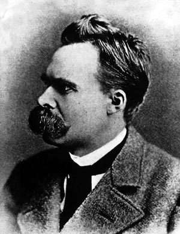

Robert Paul became a big fan of philosophy right away at the College of Charleston. Starting in Aesthetics because it was the only class he could get into that was philosophy, he decided it was one of the majors from him. Later into his education he found a fond love for the fathers of existentialism.